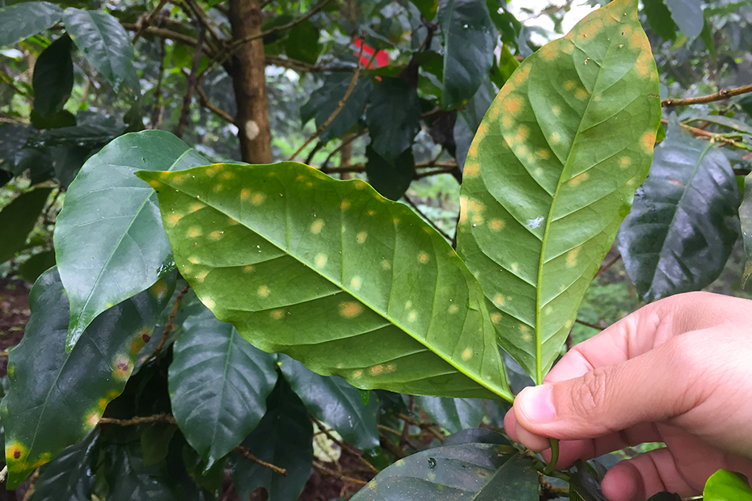
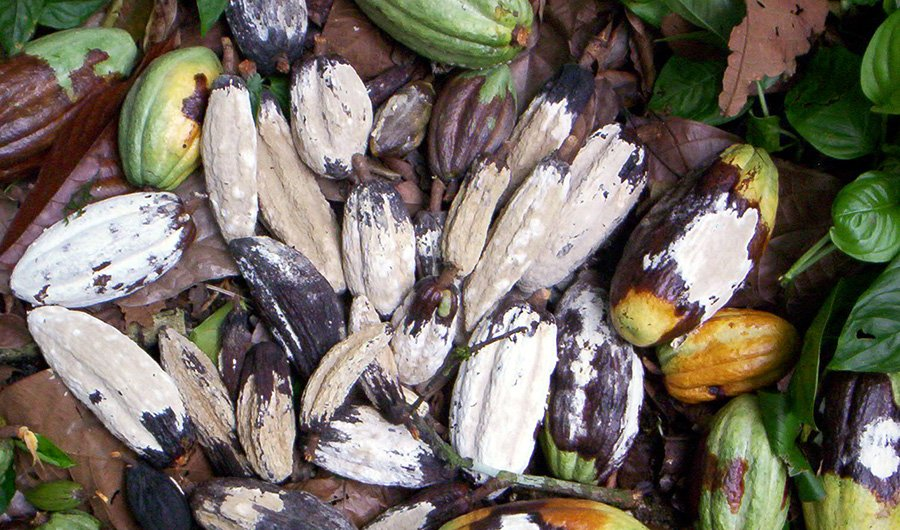
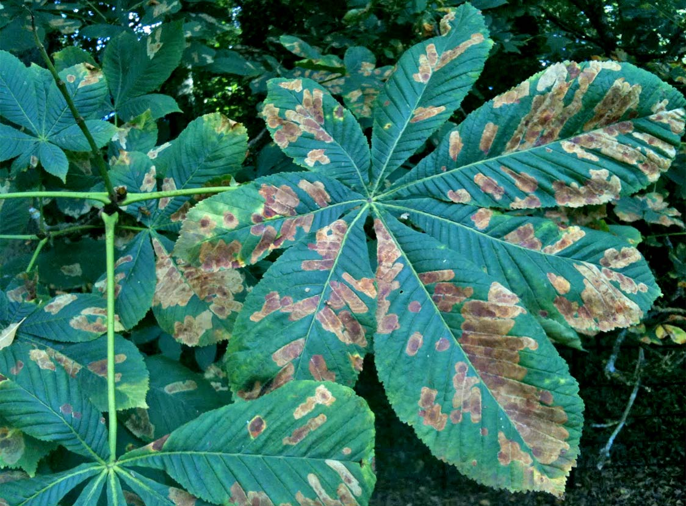
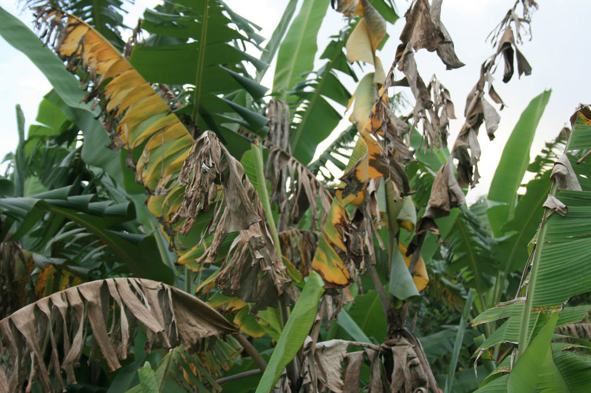
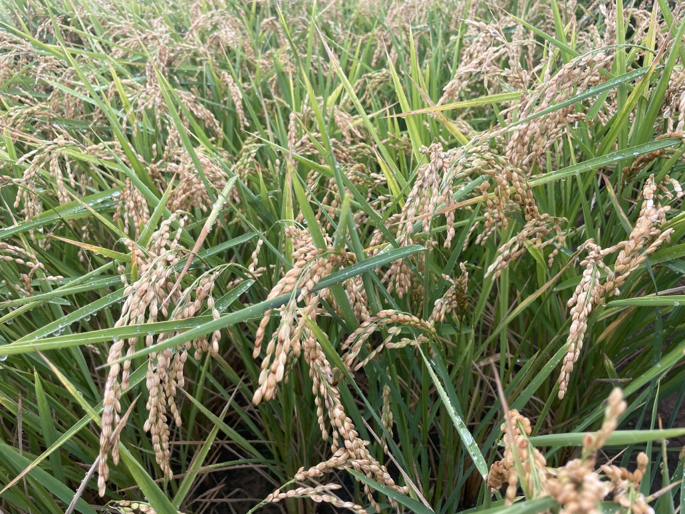
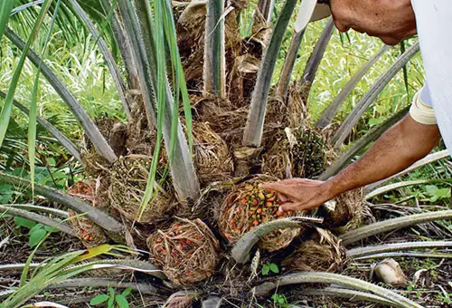

Roya del Café
2.1K PostsHongo que produce manchas anaranjadas y caída prematura de hojas en cafetales.
Identifica enfermedades agrícolas, aprende a reconocer síntomas y consulta recomendaciones de manejo.

Hongo que produce manchas anaranjadas y caída prematura de hojas en cafetales.

Enfermedad del cacao que pudre los frutos y disminuye significativamente la producción.

Produce manchas oscuras en hojas, frutos y tallos afectando diversos cultivos.

Hongo del suelo que provoca marchitez y reduce el desarrollo normal de la planta.

Enfermedad que seca hojas y afecta el rendimiento productivo del cultivo.

Enfermedad que afecta la palma de aceite, provocando el deterioro progresivo del cogollo y la muerte de la planta.